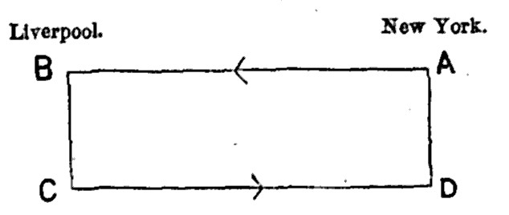

Chapter 24: Of Credit, As A Substitute For Money¶
24.1 § 1. Credit not a creation but a Transfer of the means of Production¶
Credit has a great, but not, as many people seem to suppose, a magical power; it can not make something out of nothing. How often is an extension of credit talked of as equivalent to a creation of capital, or as if credit actually were capital! It seems strange that there should be any need to point out that, credit being only permission to use the capital of another person, the means of production can not be increased by it, but only transferred. If the borrower's means of production and of employing labor are increased by the credit given him, the lender's are as much diminished. The same sum can not be used as capital both by the owner and also by the person to whom it is lent; it can not supply its entire value in wages, tools, and materials, to two sets of laborers at once. It is true that the capital which A has borrowed from B, and makes use of in his business, still forms a part of the wealth of B for other purposes; he can enter into arrangements in reliance on it, and can borrow, when needful, an equivalent sum on the security of it; so that to a superficial eye it might seem as if both B and A had the use of it at once. But the smallest consideration will show that, when B has parted with his capital to A, the use of it as capital rests with A alone, and that B has no other service from it than in so far as his ultimate claim upon it serves him to obtain the use of another capital from a third person, C.
24.2 § 2. In what manner it assists Production¶
But, though credit is never anything more than a transfer of capital from hand to hand, it is generally, and naturally, a transfer to hands more competent to employ the capital efficiently in production. If there were no such thing as credit, or if, from general insecurity and want of confidence, it were scantily practiced, many persons who possess more or less of capital, but who from their occupations, or for want of the necessary skill and knowledge, can not personally superintend its employment, would derive no benefit from it: their funds would either lie idle, or would be, perhaps, wasted and annihilated in unskillful attempts to make them yield a profit. All this capital is now lent at interest, and made available for production. Capital thus circumstanced forms a large portion of the productive resources of any commercial country, and is naturally attracted to those producers or traders who, being in the greatest business, have the means of employing it to most advantage, because such are both the most desirous to obtain it and able to give the best security. Although, therefore, the productive funds of the country are not increased by credit, they are called into a more complete state of productive activity. As the confidence on which credit is grounded extends itself, means are developed by which even the smallest portions of capital, the sums which each person keeps by him to meet contingencies, are made available for productive uses. The principal instruments for this purpose are banks of deposit. Where these do not exist, a prudent person must keep a sufficient sum unemployed in his own possession to meet every demand which he has even a slight reason for thinking himself liable to. When the practice, however, has grown up of keeping this reserve not in his own custody, but with a banker, many small sums, previously lying idle, become aggregated in the banker's hands; and the banker, being taught by experience what proportion of the amount is likely to be wanted in a given time, and knowing that, if one depositor happens to require more than the average, another will require less, is able to lend the remainder, that is, the far greater part, to producers and dealers: thereby adding the amount, not indeed to the capital in existence, but to that in employment, and making a corresponding addition to the aggregate production of the community.
While credit is thus indispensable for rendering the whole capital of the country productive, it is also a means by which the industrial talent of the country is turned to better account for purposes of production. Many a person who has either no capital of his own, or very little, but who has qualifications for business which are known and appreciated by some possessors of capital, is enabled to obtain either advances in money, or, more frequently, goods on credit, by which his industrial capacities are made instrumental to the increase of the public wealth.
Such are, in the most general point of view, the uses of credit to the productive resources of the world. But these considerations only apply to the credit given to the industrious classes—to producers and dealers. Credit given by dealers to unproductive consumers is never an addition, but always a detriment, to the sources of public wealth. It makes over in temporary use, not the capital of the unproductive classes to the productive, but that of the productive to the unproductive.
24.3 § 3. Function of Credit in economizing the use of Money¶
But a more intricate portion of the theory of Credit is its influence on prices; the chief cause of most of the mercantile phenomena which perplex observers. In a state of commerce in which much credit is habitually given, general prices at any moment depend much more upon the state of credit than upon the quantity of money. For credit, though it is not productive power, is purchasing power; and a person who, having credit, avails himself of it in the purchase of goods, creates just as much demand for the goods, and tends quite as much to raise their price, as if he made an equal amount of purchases with ready money.
The credit which we are now called upon to consider, as a distinct purchasing power, independent of money, is of course not credit in its simplest form, that of money lent by one person to another, and paid directly into his hands; for, when the borrower expends this in purchases, he makes the purchases with money, not credit, and exerts no purchasing power over and above that conferred by the money. The forms of credit which create purchasing power are those in which no money passes at the time, and very often none passes at all, the transaction being included with a mass of other transactions in an account, and nothing paid but a balance. This takes place in a variety of ways, which we shall proceed to examine, beginning, as is our custom, with the simplest.
First: Suppose A and B to be two dealers, who have transactions with each other both as buyers and as sellers. A buys from B on credit. B does the like with respect to A. At the end of the year, the sum of A's debts to B is set against the sum of B's debts to A, and it is ascertained to which side a balance is due. This balance, which may be less than the amount of many of the transactions singly, and is necessarily less than the sum of the transactions, is all that is paid in money; and perhaps even this is not paid, but carried over in an account current to the next year. A single payment of a hundred pounds may in this manner suffice to liquidate a long series of transactions, some of them to the value of thousands.
But, secondly: The debts of A to B may be paid without the intervention of money, even though there be no reciprocal debts of B to A. A may satisfy B by making over to him a debt due to himself from a third person, C. This is conveniently done by means of a written instrument, called a bill of exchange, which is, in fact, a transferable order by a creditor upon his debtor, and when accepted by the debtor, that is, authenticated by his signature, becomes an acknowledgment of debt.
24.4 § 4. Bills of Exchange¶
Bills of exchange were first introduced to save the expense and risk of transporting the precious metals from place to place.
The trade between New York and Liverpool affords a constant illustration of the uses of a bill of exchange. Suppose that A in New York ships a cargo of wheat, worth $100,000, or £20,000, to B in Liverpool; also suppose that C in Liverpool (independently of the negotiations of A and B) ships, about the same time, a cargo of steel rails to D in New York, also worth £20,000. Without the use of bills of exchange, B would have been obliged to send £20,000 in gold across the Atlantic, and so would D, at the risk of loss to both. By the device of bills of exchange the goods are really bartered against each other, and all transmission of money saved.

A has money due to him in Liverpool, and he sells his claim to this money to any one who wants to make a payment in Liverpool. Going to his banker (the middle-man between exporters and importers and the one who deals in such bills) he finds there D, inquiring for some one who has a claim to money in Liverpool, since D owes C in Liverpool for his cargo of steel rails. A makes out a paper title to the £20,000 which B owes him (i.e., a bill of exchange) and by selling it to D gets immediately his £20,000 there in New York. The form in which this is done is as follows:
New York, January 1, 1884.
At sight [or sixty days after date] of this first bill of exchange (second and third unpaid), pay to the order of D [the importer of steel rails] £20,000, value received, and charge the same to the account of
[Signed] A [exporter of wheat].
To B [buyer of wheat],
Liverpool, Eng.
D has now paid $100,000, or £20,000, to A for a title to money across the Atlantic in Liverpool, and with this title he can pay his debt to C for the rails. D indorses the bill of exchange, as follows:
Pay to the order of C [the seller of steel rails], Liverpool, value in account. D [importer of steel rails].
To B [the buyer of wheat].
By this means D transfers his title to the £20,000 to C, sends the bill across by mail (“first” in one steamer, “second” in another, to insure certain transmission) to C, who then calls upon B to pay him the £20,000 instead of B sending it across the Atlantic to A; and all four persons have made their payments the more safely by the use of this convenient device. This is the simplest form of the transaction, and it does not change the principle on which it is based, when, as is the case, a banker buys the bills of A, and sells the bills to D—since A typifies all exporters and D all importers.
Bills of exchange having been found convenient as means of paying debts at distant places without the expense of transporting the precious metals, their use was afterward greatly extended from another motive. It is usual in every trade to give a certain length of credit for goods bought: three months, six months, a year, even two years, according to the convenience or custom of the particular trade. A dealer who has sold goods, for which he is to be paid in six months, but who desires to receive payment sooner, draws a bill on his debtor payable in six months, and gets the bill discounted by a banker or other money-lender, that is, transfers the bill to him, receiving the amount, minus interest for the time it has still to run. It has become one of the chief functions of bills of exchange to serve as a means by which a debt due from one person can thus be made available for obtaining credit from another.
Bills of exchange are drawn between the various cities of the United States. In the West, the factor who is purchasing grain or wool for a New York firm draws on his New York correspondents, and this bill (usually certified to by the bill of lading) is presented for discount at the Western banks; and, if there are many bills, funds are possibly sent westward to meet these demands. But the purchases of the West in New York will serve, even if a little later in time, somewhat to offset this drain; and the funds will again move eastward, as goods move westward, practically bartered against each other by the use of bills. There is, however, less movement of funds of late, now that Western cities have accumulated more capital of their own.
The notes given in consequence of a real sale of goods can not be considered as on that account certainly representing any actual property. Suppose that A sells £100 worth of goods to B at six months' credit, and takes a bill at six months for it; and that B, within a month after, sells the same goods, at a like credit, to C, taking a like bill; and again, that C, after another month, sells them to D, taking a like bill, and so on. There may then, at the end of six months, be six bills of £100 each existing at the same time, and every one of these may possibly have been discounted. Of all these bills, then, only one represents any actual property.
The extent of a man's actual sales forms some limit to the amount of his real notes; and, as it is highly desirable in commerce that credit should be dealt out to all persons in some sort of regular and due proportion, the measure of a man's actual sales, certified by the appearance of his bills drawn in virtue of those sales, is some rule in the case, though a very imperfect one in many respects. When a bill drawn upon one person is paid to another (or even to the same person) in discharge of a debt or a pecuniary claim, it does something for which, if the bill did not exist, money would be required: it performs the functions of currency. This is a use to which bills of exchange are often applied.
Many bills, both domestic and foreign, are at last presented for payment quite covered with indorsements, each of which represents either a fresh discounting, or a pecuniary transaction in which the bill has performed the functions of money.
24.5 § 5. Promissory Notes¶
A third form in which credit is employed as a substitute for currency is that of promissory notes.
The difference between a bill of exchange and a promissory note is, that the former is an order for the payment of money, while the latter is a promise to pay money. In a note the promissor is primarily liable; in a bill the drawer becomes liable only after an ineffectual resort to the drawee.
In the United States a Western merchant who buys $1,000 worth of cotton goods, for instance, of a Boston commission-house on credit, customarily gives his note for the amount, and this note is put upon the market, or presented at a bank for discount. This plan, however, puts all risk upon the one who discounted the note. In the United States such promissory notes are the forms of credit most used between merchants and buyers. The custom, however, is quite different in England and Germany (and generally, it is stated, on the Continent), where bills of exchange are employed in cases where we use a promissory note. A house in London sells $1,000 worth of cotton goods to A, in Carlisle, on a credit of sixty days, draws a bill of exchange on A, which is a demand upon A to pay in a given time (e.g., sixty days), and if “accepted” by him is a legal obligation. The London house takes this bill (perhaps adding its own firm name as indorsers to the paper), and presents it for discount at a London bank. This now explains why it is that, when a particular industry is prosperous and many goods are sold, there is more “paper” offered for discount at the banks (cf. p. 222), and why capital flows readily in that direction.
It is chiefly in the latter form [promissory notes] that it has become, in commercial countries, an express occupation to issue such substitutes for money. Dealers in money wish to lend, not their capital merely, but their credit, and not only such portion of their credit as consists of funds actually deposited with them, but their power of obtaining credit from the public generally, so far as they think they can safely employ it. This is done in a very convenient manner by lending their own promissory notes payable to bearer on demand—the borrower being willing to accept these as so much money, because the credit of the lender makes other people willingly receive them on the same footing, in purchases or other payments. These notes, therefore, perform all the functions of currency, and render an equivalent amount of money, which was previously in circulation, unnecessary. As, however, being payable on demand, they may be at any time returned on the issuer, and money demanded for them, he must, on pain of bankruptcy, keep by him as much money as will enable him to meet any claims of that sort which can be expected to occur within the time necessary for providing himself with more; and prudence also requires that he should not attempt to issue notes beyond the amount which experience shows can remain in circulation without being presented for payment.
The convenience of this mode of (as it were) coining credit having once been discovered, governments have availed themselves of the same expedient, and have issued their own promissory notes in payment of their expenses; a resource the more useful, because it is the only mode in which they are able to borrow money without paying interest.
24.6 § 6. Deposits and Checks¶
A fourth mode of making credit answer the purposes of money, by which, when carried far enough, money may be very completely superseded, consists in making payments by checks. The custom of keeping the spare cash reserved for immediate use, or against contingent demands, in the hands of a banker, and making all payments, except small ones, by orders on bankers, is in this country spreading to a continually larger portion of the public. If the person making the payment and the person receiving it keep their money with the same banker, the payment takes place without any intervention of money, by the mere transfer of its amount in the banker's books from the credit of the payer to that of the receiver. If all persons in [New York] kept their cash at the same banker's, and made all their payments by means of checks, no money would be required or used for any transactions beginning and terminating in [New York]. This ideal limit is almost attained, in fact, so far as regards transactions between [wholesale] dealers. It is chiefly in the retail transactions between dealers and consumers, and in the payment of wages, that money or bank-notes now pass, and then only when the amounts are small. As for the merchants and larger dealers, they habitually make all payments in the course of their business by checks. They do not, however, all deal with the same banker, and, when A gives a check to B, B usually pays it not into the same but into some other bank. But the convenience of business has given birth to an arrangement which makes all the banking-houses of [a] city, for certain purposes, virtually one establishment. A banker does not send the checks which are paid into his banking-house to the banks on which they are drawn, and demand money for them. There is a building called the Clearing-House, to which every [member of the association] sends, each afternoon, all the checks on other bankers which he has received during the day, and they are there exchanged for the checks on him which have come into the hands of other bankers, the balances only being paid in money; or even these not in money, but in checks.
A clearing-house is simply a circular railing containing as many openings as there are banks in the association; a clerk from each bank presents, in the form of a bundle of checks, at his opening, all the claims of his bank against all others, and notes the total amount; a clerk inside takes the checks, distributes each check to the clerk of the bank against whom it is drawn, and all that are left at his opening constitute the total demands of all the other banks against itself; and this sum total is set off against the given bank's demands upon the others. The difference, for or against the bank, as the case may be, may then be settled by a check.1
The total amount of exchanges made through the New York Clearing-House in 1883 was $40,293,165,258 (or about twenty-five times the total of our national debt in that year), and the balances paid in money were only 3.9 per cent of the exchanges.2 For valuable explanations on this subject, consult Jevons, “Money and the Mechanism of Exchange,” Chapters XIX-XXIII. The explanation of the functions of a bank, Chapter XX, is very good.